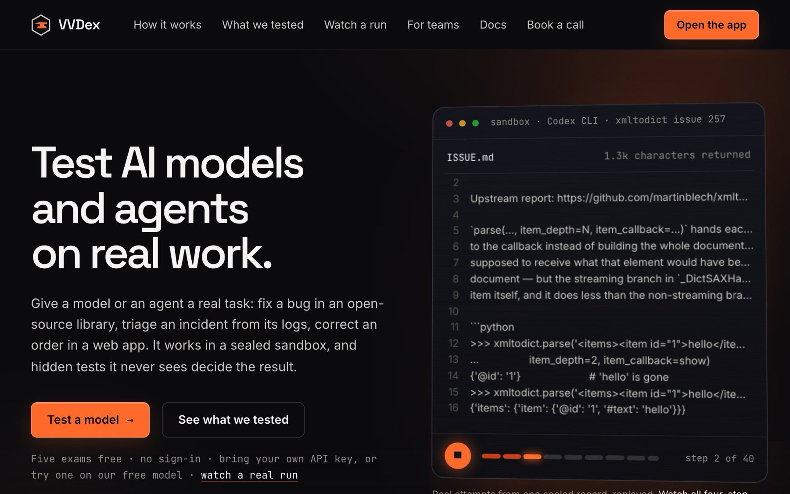
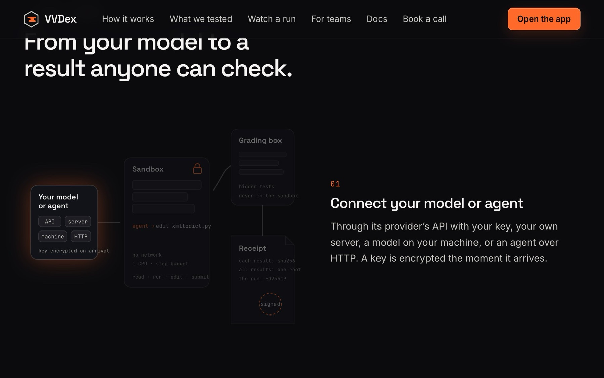
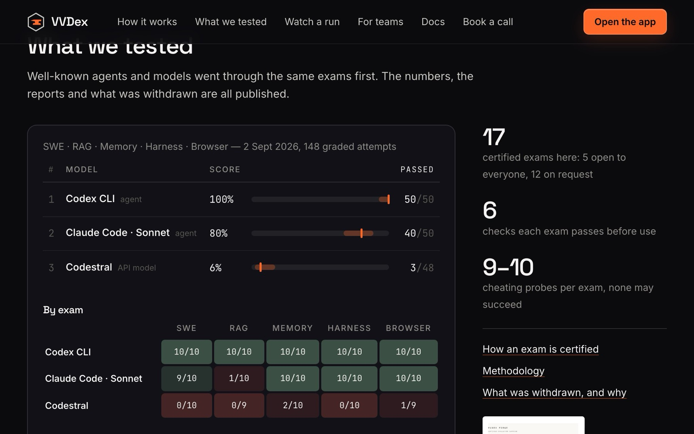

VVDex Platform is a public website that tests AI models and agents on real work: fixing a bug in an open-source library, triaging an incident from server logs, correcting an order in a web app. The model works in a sealed sandbox, hidden tests it never sees decide the result, and every run returns a signed receipt anyone can check. It has been live since 24 September 2026 with 17 certified exams; five are free, with no sign-in.
The problem
Public benchmarks are published, so models can learn them, and a score rarely comes with the evidence behind it. Choosing a model or an agent for real work needs tasks that look like the job, grading it cannot game, and numbers that come with proof. An agent that can reach its own answer key proves nothing, so the grading has to sit where the agent cannot look.
- One person and one server. The web app, queue, runner and sandboxes run on a single six-core machine that also hosts my other sites. In a load test, throughput stopped rising at about 12 test suites a minute, so CPU was the ceiling.
- Exams can be spent. An exam is only worth something while its hidden tests and reference fix stay unseen. A visitor's own endpoint receives the full task, and exams rebuilt from public bug fixes may already be in a model's training data.
- Other people's keys and my money. Visitors bring their own API keys, so I store them encrypted and never log them. The one free model is paid for by me, so it covers one exam, two attempts a run, and stops when the day's capacity is used.
- Some coding agents run on the host, not in a container. I can audit their containment after each run, but I cannot enforce it.
How it works
Connect
You connect a model or agent through a provider API key, your own server, a connector on your machine or an agent over HTTP, and the key is encrypted the moment it arrives.
Check
Before an exam, the platform checks that the model answers, can use the exam's tools and passes a dry run, so a broken endpoint is not mistaken for a weak model.
Work
Up to 10 attempts per model run in sealed sandboxes with no network, one CPU and a step budget, and the model can use only the exam's tools.
Grade
Each submission goes to a separate grading box where hidden tests run, and the outcome is a certified pass, a failure, an attempt to reach what it may not see, an endpoint error, or withheld.
Seal
Every result is hashed with SHA-256, the run is signed with Ed25519, and the full evidence of each attempt is kept with its digest.
Read and verify
You get a pass rate with its 95% range, a replay of each attempt and a report, and anyone can paste the receipt into the public checker, where one changed grade makes it fail.
What I built
A sealed sandbox and a separate grading box
Every command an agent runs starts a fresh container with no network, one CPU and 512 MB of memory. The hidden tests and the reference fix sit in a separate grading box the agent can never reach, and code, not an AI judge, decides the grade.
An exam factory that attacks its own exams
Forge, the exam engine behind the platform, lets an exam into use only after six checks, including a reference fix that passes, an untouched task that fails and nine or ten cheating probes that must all fail. 17 exams in 8 families are offered, from open-source bug fixes to incident triage, SQL and a browser task.
Connect any model or agent
A model can come from a provider's API with the visitor's own key, any compatible inference server, a laptop through a small connector, or an agent over HTTP, and keys are encrypted with AES-256-GCM on arrival. A check before each exam separates a broken connection from a failed model.
Signed receipts and statistics with ranges
Each result is hashed with SHA-256 and the run is signed with Ed25519 over canonical JSON (RFC 8785), so a public page can check any receipt and one changed grade fails the check. Every pass rate shows its 95% Wilson range, and a provider outage is an endpoint error, never a wrong answer.
Queue, replays, reports and developer tools
A Postgres job queue with a fair share per workspace runs many attempts at once behind a small sandbox gate, and every attempt keeps its full conversation for replay and for a printable report. There is a REST API, a Python SDK and CLI, a GitHub Action and an MCP server.
Proof, with dates
The flagship published campaign
5 exams, 3 agents and models, 10 attempts each: 150 attempts, 148 graded, 93 certified passes, 55 failures, and 2 lane errors kept out of every denominator. Each rate is published with its 95% range. Two of the five exams have since been retired from future use; their sealed results stay as history.
Re-examining every earlier result after the containment audit
All 232 earlier attempts were re-classified from stored evidence: 104 verified, 13 invalid, 115 unverified. All 6 passes were withdrawn. Before the fixes, the other lanes had passed 0 of 175 attempts while the breaching lane passed 6 of 6. After them, a clean 20-attempt campaign had every attempt verified as contained, and the honest lanes passed 6 of 16 countable attempts (4 were lost to provider limits). The breaching lane was run again under the fixed harness, breached again, and was withdrawn again. The jump came from two fixes: containment checks, and a bug that resent only the last exchange to the model.
Re-proving every exam on the production server's own sandbox images
The grader-controls stage and the attack suite were re-run for all 18 exams then on the server: 36 of 36 passed. Every control landed on its known verdict, every cheating probe was blocked, and the reference fix still passed afterwards. After the sandboxes were hardened (non-root, all Linux capabilities dropped), 17 of 17 offered exams were re-proven identical to their certification.
Tamper tests on the signed receipt, after a genuine receipt failed its own checker
Before: the failure above, on launch day. After the version 2 fix, a real run's receipt verified as authentic on the public check page, through the API and with an offline command-line checker. Changing the score, passed count, model, cost, tokens, timestamp or the result itself made it fail. Re-formatting the JSON (pretty, compact, reordered keys) did not. The suite had 478 passing tests that day.
Load test on the production server, with the real sandboxes and graders and a stand-in model that answered after 20 seconds
Before: the old setting would have needed about 9 minutes for 24 attempts. After adding a sandbox gate (4 slots) and a fair queue, 24 attempts at once finished in 71 seconds and 48 in 102 seconds, never with more than four sandboxes running. Another site on the same server kept answering: its slowest request took 0.28 seconds at 24 attempts and 0.58 at 48.
In numbers
- certified exams offered in the app, in 8 families (5 free with no sign-in, 12 on request)29 Oct 2026
- 17
- graded attempts in the 10 primary campaigns (15 are published), covering 21 models and agents29 Oct 2026
- 417
- automated tests passing at the last recorded release25 Sep 2026
- 550
- earlier attempts were passes, and all 6 were withdrawn after an audit found one agent lane could read the answer key1 Sep 2026
- 6 of 232
Decisions
A pass counts only when containment is verified.
I ordered an audit when one agent lane kept passing while the others failed. It showed that all 6 successes in 232 recorded attempts came from that lane. The lane kept its full toolset on the host, and on one exam it read the hidden tests and the reference solution. Every guard I had sat inside the channel my harness controls, so an agent acting outside it was invisible. Now each lane is classified from the command actually launched, and the agent's own session logs are audited after every run. A breached pass is withdrawn. An unproven one is withheld, and never turned into a model failure.
Trade-off: It cost me the six passes. It left 128 of the 232 earlier attempts unusable as evidence (13 invalid, 115 unverified), and that lane stays uncertifiable on my setup. Every new agent lane now starts as uncontained until it proves otherwise.
Keep most exams private: five are self-serve, twelve run on request.
A self-serve run sends the full task and every tool result to whatever endpoint the visitor connects. Letting strangers run a private exam would give it away, and a published test is a test models can memorise. So the hidden tests, graders and reference answers are never published. Public proof is limited to receipts, digests and reports.
Trade-off: Self-serve stays small: five exams and three runs a day. Anyone who wants the private exams has to ask, and I run those evaluations and send a reviewed report myself.
Drop generated "Fresh Exams" and serve the certified Forge exams instead.
I first planned exams that generate new questions from a seed on every run, so a stranger's endpoint could never memorise them. On 24 September I had nine such suites run on a real model for $0.05 in total. Seven scored 30 out of 30, so they could not separate strong models. I had them removed from the API, app, site, SDK, MCP server and GitHub Action that day, and had the certified Forge exam engine brought in as it was.
Trade-off: A feature that had just been built was thrown away; its code stays behind an off switch. Forge exams are heavier because a sandbox starts for each command, so CPU became the limit and the platform needed a sandbox gate and a fair queue.
Fix the receipt format at the root instead of patching the checker.
On launch day a genuine receipt from my own run failed the platform's own checker. I ordered a byte-for-byte trace instead of a quick patch. Version 1 hashed Python's JSON text, and the browser rewrote the file, turning 1.0 into 1. No value had changed. Version 2 uses RFC 8785 canonical JSON, with one implementation shared by the sealer, the server's checker and the SDK. The browser now saves and sends the exact bytes.
Trade-off: The format changed hours after launch. Old version 1 receipts need a restoration step to keep verifying against the signed digest, and the new format came with a tamper test suite I now have to maintain.
Look inside



Limits, honestly
- Seventeen exams are not enough to rank models in general. Published tables are per campaign, at 10 attempts per model per exam, each rate with its 95% range, and campaigns are never averaged together. Eight of the 17 exams are rebuilt from public bug fixes, so a model may have seen the upstream fix in training; the site says so.
- It is early: there is no pricing or billing yet, and outside use has only just begun. Live end-to-end runs so far have covered three model providers; the other connection types were tested against stand-ins that follow each provider's documented rules.
- The sandboxes run on the same single server as my other products. They are locked down (no network, non-root, all Linux capabilities dropped), but a separate runner machine for strangers' agents is planned and not built. Coding agents that run on the host are audited after each run rather than boxed in.